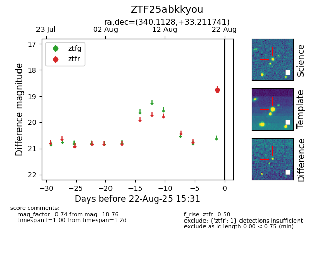

Target ZTF25abkkyou at 2025-08-22 16:16, see:
FINK: fink-portal.org/ZTF25abkkyou
Lasair: lasair-ztf.lsst.ac.uk/objects/ZTF25abkkyou
ALeRCE: alerce.online/object/ZTF25abkkyou
alt names
ZTF25abkkyou (ztf,alerce)
coordinates:
equatorial (ra, dec) = (340.1128,+33.21174)
galactic (l, b) = (93.6889,-22.11779)
photometry
last ztfr=18.76
1 ztfr detections
